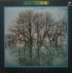

■その他のアルバム・レア盤などを掲載します。
作品一覧
先頭の●をクリックすると、その作品へジャンプします。●はアナログディスク(AD)、●はCDを表します。
●SING OUT LIVE'79 ●●五つの赤い風船'75●五つの赤い風船リサイタル'71
●五つの赤い風船ライブ ●五つの赤い風船ライブ●精神貴族・
中津川フォークジャンボリー レッドバルーンメモリアル'70 フォークの集い

●おまけレコード ●御年玉レコード ●NHKみんなのうた
ボクたち大阪の子どもやでェ
●「西岡たかし・長野たかしでこんにちは！ ●「そんなに愛が欲しいのなら」
Vol.1」(カセットテープ) カラオケ・ソノシート(非売品)
(ジャケットはありません)
● SING OUT ！五つの赤い風船LIVE'79 TOP
| side A |
side B |
| 1 |
そんな気が |
1 |
時は変わってしまった |
| 2 |
私は地の果てまで |
2 |
一つのことば |
| 3 |
風が何かを・・・ |
3 |
まるで洪水のように |
| 4 |
ボクは風 |
4 |
まぼろしの翼と共に |
| 5 |
ふる里の言葉は |
5 |
もしもボクの背中に羽根が生えてたら |
| 6 |
時計 |
|
|
| side C |
side D |
| 1 |
どこかの星に伝えて下さい
〜おとぎばなしを聞きたいの |
1 |
恋は風に乗って |
| 2 |
殺してしまおう |
2 |
これがボクらの道なのか |
| 3 |
血まみれの鳩 |
3 |
遠い世界に |
| 4 |
唄 |
4 |
遠い空の彼方に |
|
|
5 |
花と空に・・・ |
西岡たかし/藤原秀子/東祥高/長野隆
1979年9月19日 大阪サンケイホール
1979年9月25日 東京芝郵便貯金ホールにて収録 |
| LP Victor／SJX-8071〜72／1979.11.25／廃盤 |
| コメント ギヌ 風船10周年コンサートのライブ |
| side A |
side B |
| 1 |
テーマ |
1 |
ある朝こっそり |
| 2 |
すぷりんぐ・そんぐ |
2 |
北国の女の子に |
| 3 |
ジャンジャン町ぶるうす |
3 |
ヘンリーヘンデルの店 |
| 4 |
ところが僕は |
4 |
僕は羽根のように |
| 5 |
君の街 |
5 |
昨日・今日・明日 |
| 6 |
誰かがお前を待っている |
|
|
| 西岡たかし／中川イサト／金森幸介／ながい よう |
| LP ELEC URC URG-4024 /1975.8(廃盤)CD:avex io/IOC1-41013 2003年発売 |
コメント おおふじ 「昨日・今日・明日」を西岡さんが歌っていたことと、「誰かがお前を待っている」が西岡さんの
曲だったことに驚いた。 |
| side A |
side B |
| 1 |
風がなにかを・・・ |
１ |
母の生れた街 |
| 2 |
ふる里の言葉は |
２ |
殺してしまおう |
| 3 |
キリンさん |
３ |
血まみれの鳩 |
| 4 |
めめずはん |
４ |
遠い世界に |
| 5 |
小石をけってみよう |
|
|
| 6 |
これがボクらの道なのか |
|
|
| 7 |
遠い空の彼方に |
|
|
西岡たかし/藤原秀子/東祥高/長野隆
収録：1971年4月1日 神田共立講堂 |
(LP) SMS Records／SM22-4025／発売日不明／廃盤
（幻のフォークライブ傑作集・8） |
コメント おおふじ たいちさんのおかげで現物を入手できましたm(__)m。「FLIGHT」収録の曲が歌われています。
「血まみれの鳩」は、「ゲームは終わり」と同じく、フー子ちゃんがソロで1,2番を歌い、西岡さんがリコーダーで伴奏
しています。アメリカ録音盤の「遠い世界に」も、フー子ちゃんのソロだし、このころから、そういう演奏が増えたので
しょうか?
音質は、PAをそのままテープレコーダーで録音したらしく、レベルオーバーで歪んでいるところが多く、最悪です。 |
● 五つの赤い風船ライブ／中津川フォークジャンボリーTOP
| side A |
side B |
| 1 |
これがボクらの道なのか |
１ |
遠い空の彼方に |
| 2 |
遠い世界に |
２ |
どこかの星に伝えて下さい
（西岡さんボーカル） |
| 3 |
まぼろしの翼と共に |
３ |
１３番街のおもちゃ屋 |
| 4 |
おとぎばなしを聞きたいの |
４ |
血まみれの鳩 |
| 5 |
どこかの星に伝えてください
（フー子ちゃんボーカル） |
５ |
これがボクらの道なのか |
| 6 |
殺してしまおう |
６ |
遠い世界に（シングアウト） |
西岡たかし/藤原秀子/東祥高/長野隆 (詳細クレジットなし）
収録：1970年8月8日〜9日 ＜第２回全日本フォークジャンボリー＞ |
| 制作：（有）アート音楽出版（幻のフォークライブ傑作集・7） |
コメント ギヌ '70 全日本フォークジャンボリー」での風船の演奏だけを集めたもの。1-3,1-6,2-5,2-6 は、ビクタ
ーの「フォーク・ジャンボリー実況録音オムニバス」（LP ビクター SJV-477〜8/1970/廃盤）に収録されている。（音
源も同じ） 1-4,2-2,2-3 は「URC 1970フォーク・ジャンボリー」（CD 東芝EMI/TOCT-10380-1/1998.8.7）に収録
されている。
おおふじ 西岡さんがコンサートの中で話されているとおり、フー子ちゃんの体調がよくない分を西岡さんががんば
った、ということがよく感じられる。「どこかの星に伝えて下さい」（西岡さんボーカル）はエネルギッシュで、この日の
フー子ちゃんのボーカルを超えている。「遠い世界に」も2回歌われていて、初めのはスローテンポ、最後のほうは
アップテンポだ。私は後者が「遠い世界に」らしいと感じる。「１３番街のおもちゃ屋」は西岡さん流の反戦歌だ。直
接戦争を批判するのではなく、情景を歌うなかで思いを伝える手法は、現在の西岡さんのアルバム「瞳の青年」の
楽曲「寓話」などにも通ずるものがある。 |
● 五つの赤い風船ライブ／レッドバルーンメモリアル'70TOP
| side A |
side B |
| 1 |
恋は風に乗って |
６ |
青い空の彼方から |
| 2 |
これがボクらの道なのか |
７ |
おとぎばなしを聞きたいの |
| 3 |
一つの言葉 |
８ |
殺してしまおう |
| 4 |
まぼろしの翼と共に |
|
|
| 5 |
もしもボクの背中に羽根が生えてたら |
10 |
|
| 6 |
小さな夢 |
11 |
|
| side C |
side D |
| 1 |
赤い風船（テーマ） |
１ |
母の生まれた街 |
| 2 |
二人は（夕焼けに二人は) |
２ |
まるで洪水のように |
| 3 |
いやなんです |
３ |
血まみれの鳩 |
| 4 |
貝殻節 |
４ |
これがボクらの道なのか |
| 5 |
女の子のブルース |
５ |
遠い世界に |
| 6 |
一番星みつけた |
|
|
| 7 |
遠い空の彼方に |
|
|
西岡たかし/藤原秀子/東祥高/長野隆
木田高介(詳細クレジットなし）
1970年3月31日 新宿厚生年金ホールにて収録 |
制作：（有）アート音楽出版
（幻のフォークライブ傑作集・6）
(LP) SMS Records／SM38-4010〜11／発売日不明／廃盤 |
コメント ギヌオリジナルのアルバム第４集「イン・コンサート」の収録日が、3月31日/4月1日となっていますか
ら、たぶん「イン・コンサート」に収録されなかった演奏を集めた物だと思います。「イン・コンサート」とダブっている曲
でも、演奏内容が同じものは一曲もありません。
ビクターの「フォーク・アルバム・第２集」には、このコンサートから「おとぎばなしを聞きたいの」が収録されています
が（これはビクター盤でしか聴けない）、このアルバムに収録されている「おとぎばなし・・」はビクター盤の物とは演
奏内容が違います。
「幻のフォークライブ傑作集」というシリーズは、URCに残っていたライブ音源を端からレコード化してしまった企画の
ようです（中にはかなり音の悪いものや、モノラル音源のものもある）。全25タイトル。この内、風船関係の物は9
タイトル。
SMS(Sounds Marketing System Inc.)と云うのがどういう会社なのか不明なんですが、このシリーズの制作が殆ど
アート音楽出版であること、このシリーズが発売された頃には既にURCは消滅していたこと（たぶん）、などから考
え合わせると、どうもこのシリーズの為にアート音楽出版が便宜上作ったレコード会社なのではないか、と云う気が
するんですがどうなんでしょう。（あくまでも私の憶測であって、正確なところは不明です）。 |
| side A |
side B |
| 1 |
伝道（加川良） |
１ |
されど私の人生（斉藤哲夫） |
| 2 |
サラリーマンを馬鹿にしちゃダメよ
（岩井宏） |
２ |
時は矢の様に（斉藤哲夫） |
| 3 |
アイスクリーム（高田渡） |
３ |
猫と僕と君（遠藤賢司） |
| 4 |
６９（高田渡） |
４ |
待ちすぎた僕はとても疲れてしまった
（遠藤賢司） |
| 5 |
淋しい気持ちで（高田渡） |
５ |
ハローグッバイ（遠藤賢司） |
| 6 |
生活の柄（高田渡） |
|
|
| side Ｃ |
side Ｄ |
| 1 |
愛 |
1 |
殺してしまおう |
| 2 |
遠い空の彼方に |
2 |
どこかの星に伝えて下さい |
| 3 |
青い空の彼方から |
3 |
大漁唄い込み |
| 4 |
ボクは風 |
4 |
遠い世界に |
西岡たかし/藤原秀子/東祥高/長野隆(詳細クレジットなし）
収録：1971年4月13日 神田共立講堂 |
(LP) SMS Records／SM38-4033〜44／発売日不明／廃盤
（幻のフォークライブ傑作集・24） |
コメント ギヌオムニバス・２枚組ですが、２枚目は全て、風船の演奏。「精神貴族・フォークの集い」と云うのが、
このコンサートのタイトルなのか、このアルバムのためだけに付けられたタイトルなのかは不明。
4-3 「大漁唄い込み」は「貝殻節」と同じで、民謡に西岡さんが曲を付けた物。4-2 「どこかの星に伝えて下さい」の
演奏は、私のお気に入り。 |
| side A |
side B |
西岡さん宅にメンバーが集まって、おしゃべり
&「ボクは広野に一人居る」の演奏.........作詞：西
岡たかし・作曲：長野隆 |
殺してしまおう.........................作詞・作曲：西岡
たかし |
西岡たかし/藤原秀子/東祥高/長野隆
収録 A：1971年6月7日 午後1:00〜 西岡宅
B：1970年4月1日 文京公会堂 |
コメント ギヌ たぶん、アルバム第５集をURCに直接申し込むと、おまけに付いてきたレコード。
A面「ボクは広野に一人居る」は、アメリカ録音のものより、風船のメンバーが演奏している、こちらの方が私は好
き。（かなりラフな演奏ではあるけれど）
B面「殺してしまおう」は、「イン・コンサート」と同じステージでの演奏。（ヴァイブは木田高介、たぶん）
●「五つの赤い風船・おまけレコード」のB面の収録が、B：1970年4月1日 文京公会堂となっていますが、これはち
ょっとおかしい。（レーベルにそう印刷されているので、入力ミスではありません）1970年4月1日には、東京厚生年
金小ホールで「風船リサイタル」（「イン・コンサート」に収録）をやっているはずなので、日付か場所のどちらかが間
違っていることになる。演奏内容から判断するかぎり、「文京公会堂」が間違っているのではないかと思うのです
が、なにせ「おまけレコード」なのでこれ以上正確なことは解りません。 |
| side A |
side B |
大ダイジェスト盤・三億円強奪事件の唄
....原曲：ジェシー・ジェームズ・作詞：高田渡 |
砂漠........................作詞・作曲：西岡たかし |
A：高田渡、岡林信康、西岡たかし、他 収録：1969年3月15日 渋谷公会堂
B：唄、語り 西岡たかし / ミキサー 四家秀次郎 アオイ・スタジオ 1969.8.4 |
コメント ギヌ これは何のおまけでもらったのか、全く不明。「砂漠」はもともと URC URS-0010のシングルに収録
されていたものだと思う。 |
| side A |
side B |
| ユミちゃんの引っ越し さよならツトムくん |
ボクたち大阪の子どもやでェ |
A：川橋啓史・大塚佳子 歌 作詞・作曲 みなみ らんぼう
B：T.J.C 歌 作詞・作曲 西岡たかし ポリドールレコード DQ 1005 |
コメントたいちさんから提供していただきました。NHKみんなのうた の放送盤そのもののEPです。1976年ごろＮ
ＨＫで放送されて、その後発売されました。 |
●「西岡たかし・長野たかしでこんにちは！Vol.1」TOP
|
| 1 |
とぎれとぎれ |
6 |
青い空の彼方から |
| 2 |
天草の思い出 |
7 |
八千夜旅館 |
| 3 |
あした |
8 |
田舎町のうまい酒 |
| 4 |
幸福 |
9 |
生きる |
| 5 |
英雄“風” |
10 |
うろこ雲の絵 |
西岡たかし/長野隆(詳細クレジットなし）
収録：1980年1月14日 |
| 五つの赤い風船コミュニティより配布(会員限定) |
コメント (おおふじ)humanzoo77様からデータをいただきました。有り難うございます。風船が79年に再結成され
たときに「風船コミュニティ」の会員を募り、東さんが中心となって機関紙の発行などを行っていました。その活動の
ひとつとして、このライブを収録したカセットテープが配布されたそうです。「Vol.1」となっていますが、続編が配布さ
れたかどうか、わかりません。
内容は、西岡さんと長野さんが二人で行っていたライブの記録で、市販されたアルバムにはない、貴重な音源で
す。ジャケットなどはなく、手作りのカセットテープだということです。(現物は拝見していません。)西岡さんのソロが
中心で、長野さんはバックの演奏とコーラスを担当しています。1曲目は私の知らない曲でした。他の曲は、西岡さ
んのソロアルバムに収録されていますが、ライブならではのノリで歌われており、オリジナルとはかなり違った演奏
になっています。 |
|